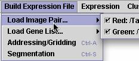

Load Image Pair.... (Control R and Control G)

This allows you to browse your hard drive to find the tiff files for the two colors. You can load the two tiff files in either order. If you have added files to the project, or moved files into the project folder and updated the project, all tiff files will be located in the Images folder of the project. Otherwise, you can navigate to the location of the files on your hard drive. Just be sure to match the colors and the files. Remember that red is a longer wavelength than green.